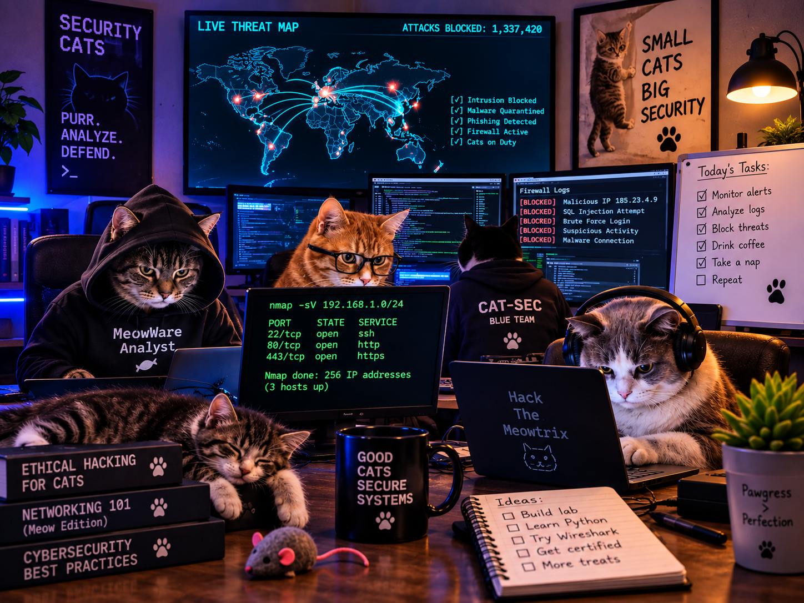

My Name is John Doe and i am passionate working with computers and sharing my expierence with others
My Name is John Doe, and I am currently majoring in cybersecurity at the Umbrella Academy. I was Born and raised in Pluto and have always been interested in electronics. At the Age of 90 years Old, I joined the US Army and served a total of 7 years as a signal support specialist and have led various communication missions between foreign and domestic. My focus was in cryptography, Radio communications, networking, and operating a retransmission team to extend the RF signal for distant ends trying to communicate but are to far or a natural barrier is in the line of sight of the RF Signal being emitted. My long term Goal is to combine my military experience, Certifications and the degree I’m currently working on at the Ub=mbrella Academy in order to land career with a government entity such as the FBI, DEA or contractor in the IT field. Some of my hobbies include Fishing, Gym,MMA, Gaming and Grilling. I enjoy building Gaming PCs and experimenting with various components, new or old The picture below is my Personal record in that species of fish(Black Drum). Ever since I have been chasing the adrenaline, the fish measured a staggering 33 inches and my guess is that it weighed about20 pounds.
Phone: (575)123-4567
Email: johndoe123@gmail.com
Address: 123 Bikkini Bottom